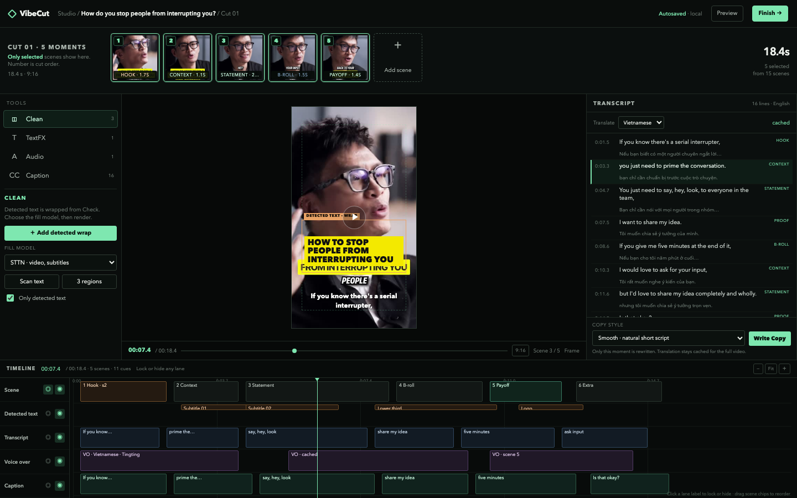
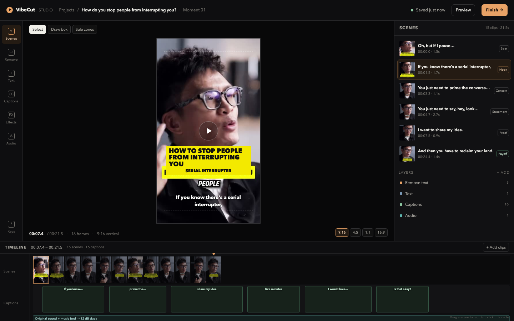
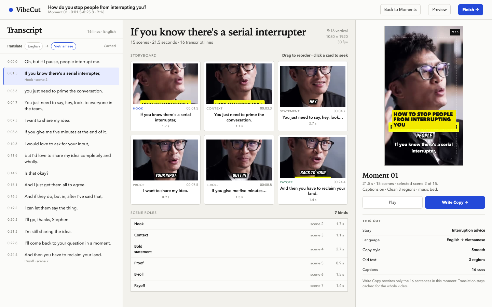
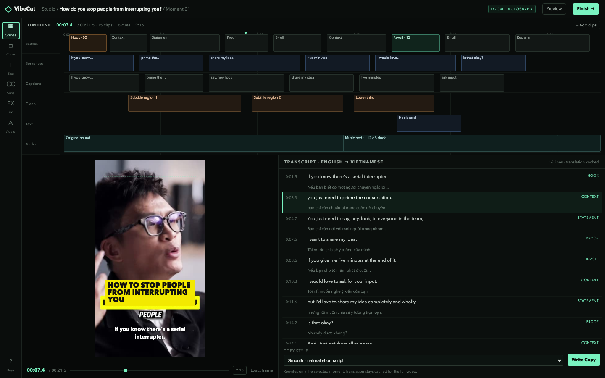

Revision 04 / from founder feedback
Moment Board
Compact 1:1 moment board at the top, only selected scenes by default. Clean/TextFX/Audio/Caption rail with options on the left, preview centre, transcript and translation right, five locked/hidden timeline lanes below.
- Best for
- Reviewing a cut at a glance, then fixing one scene
- Strength
- Moment order, transcript and scene layers agree
- Check
- Is the moment board compact enough? Is Clean’s model picker in the right place?

Direction 01 / finalist
Cutting Table
The frame is the room. One tool rail, one scene list, a filmstrip timeline. Closest to a professional cutter without the dashboard chrome.
- Best for
- Creators who watch the frame and trim by eye
- Strength
- Preview dominates; tools stay out of the way
- Risk
- Still the nearest to today’s Studio shell

Direction 02 / finalist
Paper Edit
Read the cut before watching it. Full transcript, scene cards and preview share one editorial spread. No bottom timeline on first view.
- Best for
- Talking-head, interview and advice videos
- Strength
- Translation and rewrite feel native to the edit
- Risk
- Dense reading; less direct for action footage

Direction 03 / finalist
Control Room
Time is the top layer. Scenes, sentences, captions, clean, text and audio lanes run over a live transcript console. Built for repeated cuts.
- Best for
- Creators making ten or more Shorts a week
- Strength
- Every scene, role and layer is visible at once
- Risk
- Dense for a first-time creator